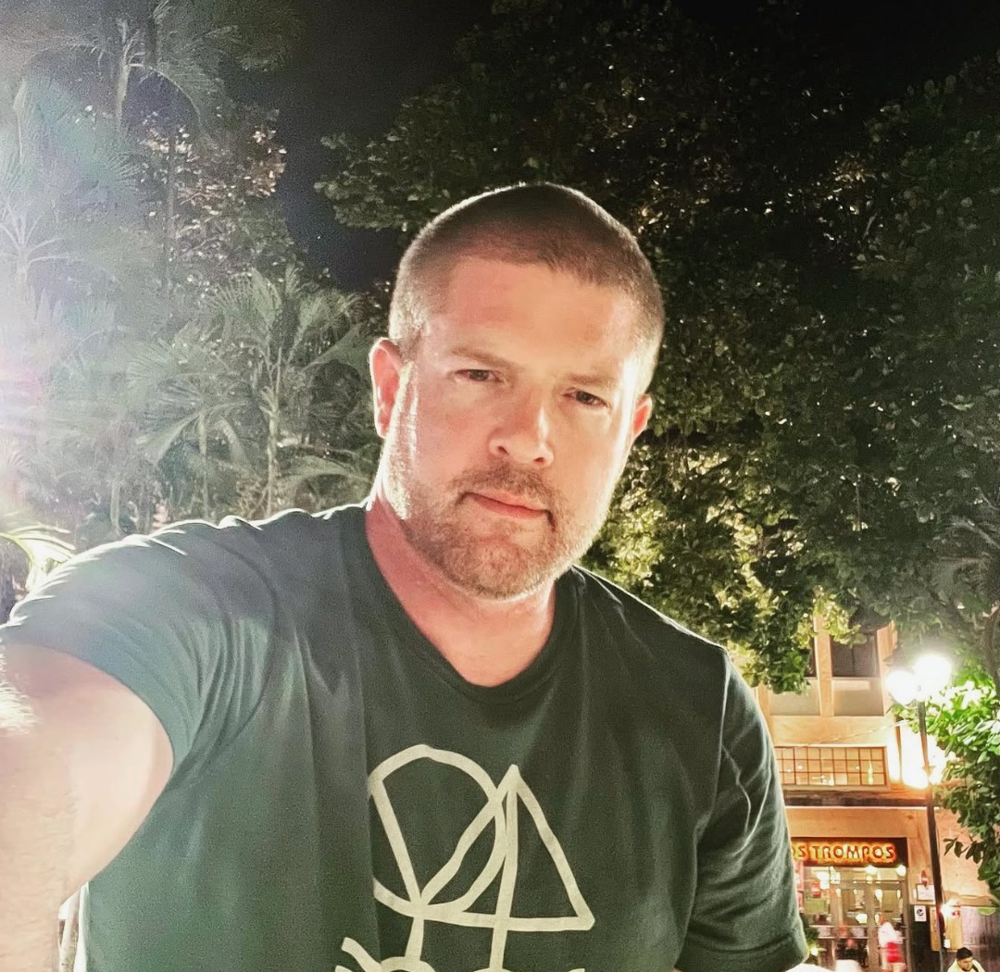
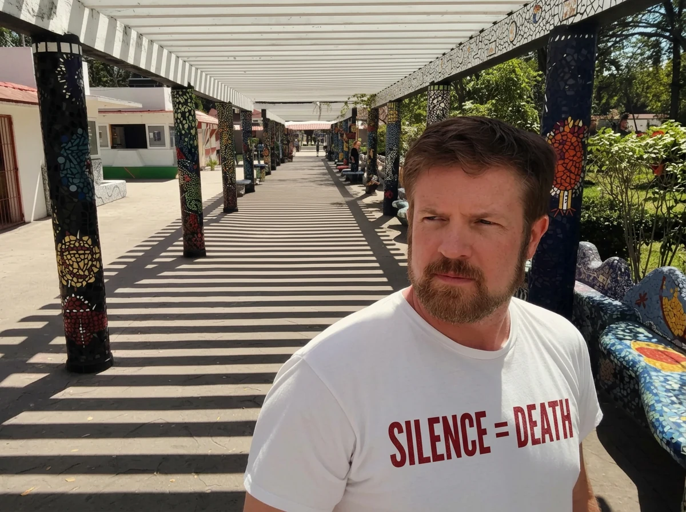

Queer identity
Queer identities across and beyond the LGBTQIA+ spectrum.
Queer, LGBTQIA+, and gay psychotherapy and mental health counseling throughout New York
I provide psychotherapy and mental health counseling for Queer adults, couples, and polycules navigating identity, relationships, family, community, sex, and the structures they choose or inherit.
I provide psychotherapy and mental health counseling virtually throughout New York. My practice is private pay, and I provide superbills for possible out-of-network reimbursement.

Queer clinician
Sex-positive
Polyamory & non-monogamy affirming
Kink & fetish aware
Trauma-informed
What I work on
Queer identities across and beyond the LGBTQIA+ spectrum.
Questioning, disclosure, privacy, visibility, and living a life that is more complicated than any single label.
Religious, cultural, societal, familial, and community histories that still inform the present, including shame, rejection, concealment, discrimination, and trauma. What can stay, what must go, and what gets to be added.
The desire to belong, the reality of exclusion, and the sometimes complicated work of finding one’s place within Queer communities.
Monogamy, non-monogamy, open relationships, and polyamory - as practices people already live or possibilities still taking shape.
Kinks and fetishes as sources of pleasure, meaning, identity, and community, including questions of consent, safety, disclosure, privacy, and participation in one or more communities.
Aging in cultures that can be preoccupied with youth, including changes in identity, bodies, sex, relationships, visibility, caregiving, and family.
For concerns involving desire, intimacy, sexual function, consent, safety, hygiene, STIs, compulsivity, infidelity, and sex after trauma, see my work concerning sex and sexuality.
Explore sex, sexuality, and intimacyYaegerisms
“I don’t judge, I don’t presume, and I’ve yet to be shocked.”
“Use the language that works for you; I will follow your lead.”
“Discomfort is information, not an obstacle.”

About me
I’m a licensed mental health counselor in New York, and I identify as Queer.
My work in and around the Queer community long predates my clinical practice. I have helped shape local and federal policy on Queer rights and equality and provided executive counsel to leaders at major advocacy organizations, including HRC and GLAAD. I have volunteered on the front lines with SAGE, GMHC, the Hetrick-Martin Institute, and the Sisters of Perpetual Indulgence. I continue to advise Fortune 500 companies and international governments on issues affecting their Queer employees, colleagues, and constituents.
I have taught Sex & Sexuality at the graduate level. My graduate research examined sexual dysfunctions and disorders as symptoms of PTSD and considered whether established PTSD interventions could inform more effective treatment.
I have written for Queer publications including The Advocate and Outsports, and about issues concerning the Queer community for major publications such as HuffPost. At HuffPost, I was among the first writers to publish an intimate account of gay male polyamory in a major public forum. I have appeared on Queer and Queer-adjacent podcasts and radio programs, including The Michelangelo Signorile Show and Derek and Romaine’s DNR.
My relationship to these subjects and issues is also intimate. I am a member of the kink community, have personal experience with ethical non-monogamy and polyamory, and am legally married to my husband. In 2026, I became a sperm donor to a baby girl being raised by two women I care about deeply.
Read more about my backgroundConsultation
I offer a brief, no-fee phone or video consultation so we can discuss what brings you here, what you are looking for, and whether I might be the right therapist for you. Video consultations take place through Doxy, a HIPAA-compliant platform.
Request a consultation